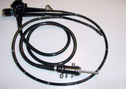

HighHealth veterinary clinic is supplied with one of the most modern imaging departments:
X- ray unit Gierth HF90/20 – digital, high-frequency x – ray unit, which allows perfect image quality with minimum exposure of the patient. Plus standard radiographic examinations, we perform sophisticated contrast medium studies – portography / used to assess abnormalities in the vessels of the liver /, myelography / contrast medium evaluation of spinal column in vertebral disc disease /, contrast medium examinations of the urinary tract-excretory urography and cystography.
Ultrasound system Mindray DC-6vet- last generation system with color Doppler performance and several transducers which permit detailed examination of the heart / echocardiograpyhy /, internal organs, blood vessels, superficially located structures / tendons, thyroid gland /
Electrocardiography gives us information for the heart rate,rhythm,conductability,dilation and hypertrophy of the ventricles, injury of the myocardium,ischaemia,pericardial diseases, electrolyte disturbances.

Video rhino-otoscope Storz – used for precise diagnostics of the hardly accessible –nasal cavity and ear canals,it enables tissue samples for histologic and microbiological examinations to be taken and foreign bodies to be removed.It is used for arthroscopy too.